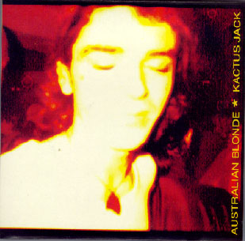
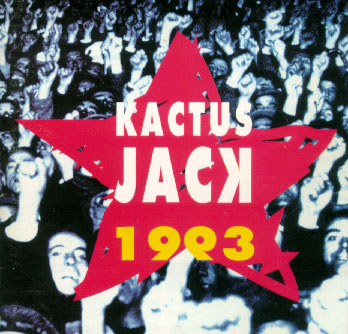
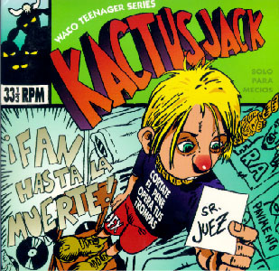
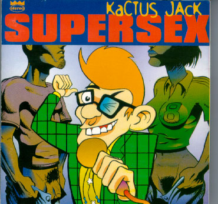
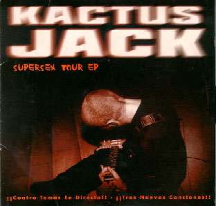

| Subterfuge Records, Ref 21-026
Principios de 1993 Canciones: - R'n'r made a male of me - Silver Surfer |  |
|
WACO CDs, Ref 003
Finales de 1993 Canciones: |
 |
| WACO Records, Ref 001 EP
1995 Canciones: |
 |
| WACO Records
Septiembre de 1995 |
 |
| WACO Records, Ref. Vinyl EP 06
Marzo 1996 Canciones:
|
 |
| Astro Discos (1998) |
| Astro Discos (1996) |
| Astro Discos (1998) |